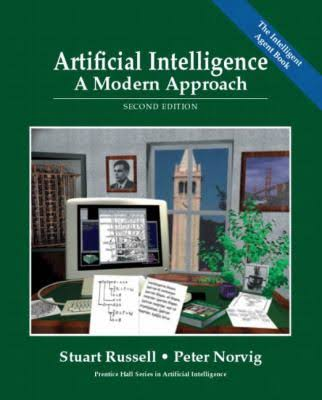
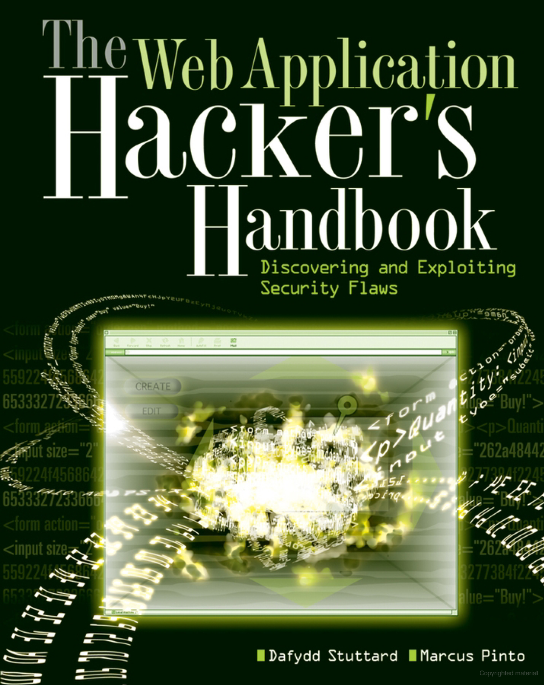
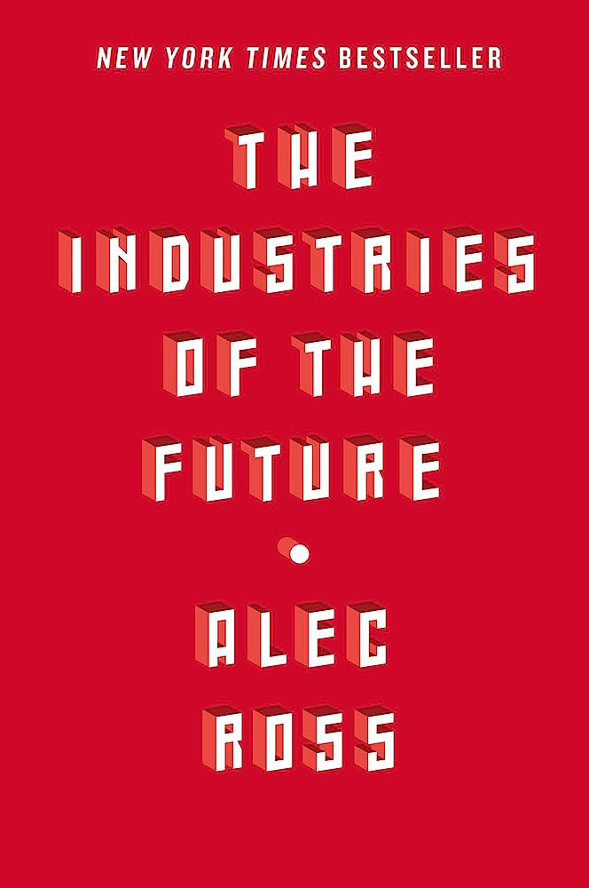
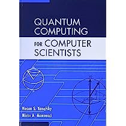
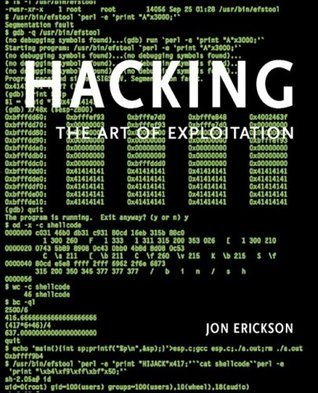
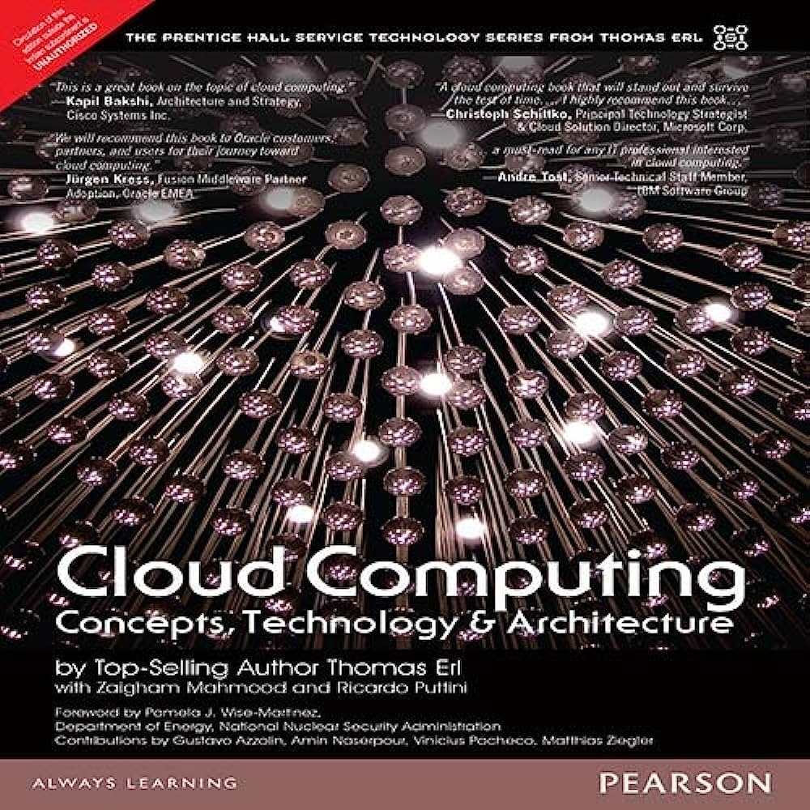
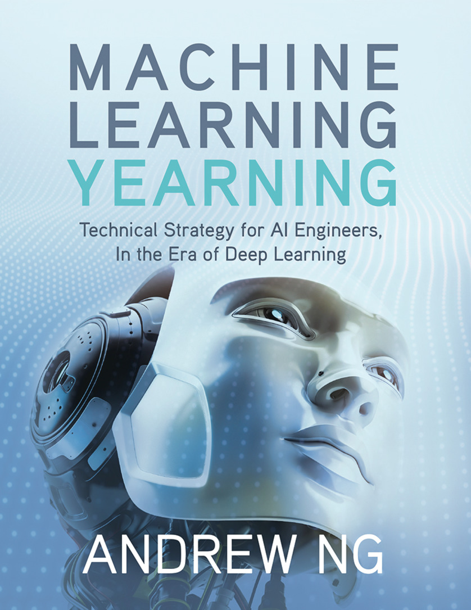

Clean Code: A Handbook of Agile Software Craftsmanship
Robert C. Martin

Immerse yourself in the world of clean and maintainable code with "Clean Code." This book is essential for web developers who strive to write code that is not only functional but also elegant and easy to maintain. By following the principles and best practices outlined in this book, you can enhance your coding skills, improve collaboration with fellow developers, and ultimately deliver high-quality web applications that stand the test of time.
Artificial Intelligence: A Modern Approach
Stuart Russell and Peter Norvig
Embark on a comprehensive exploration of artificial intelligence with "Artificial Intelligence: A Modern Approach." This book serves as a definitive guide for anyone interested in AI, providing a solid foundation in the field. By studying its pages, you'll gain a deep understanding of AI techniques, including machine learning, natural language processing, and computer vision. Armed with this knowledge, you can unlock the potential of AI and harness its power to create intelligent systems that transform industries.
The Web Application Hacker's Handbook: Finding and Exploiting Security Flaws
Dafydd Stuttard and Marcus Pinto
Step into the shoes of a cybersecurity professional and learn how to protect web applications from vulnerabilities with "The Web Application Hacker's Handbook." This book equips you with the knowledge and tools to identify and fix security flaws in web applications. By understanding the tactics employed by hackers, you can adopt proactive measures to ensure the integrity and security of your web development projects.
The Industries of the Future
Alec Ross
Prepare yourself for the rapidly evolving landscape of future technology with "The Industries of the Future." This book offers a compelling exploration of emerging technologies that will shape our world, such as robotics, cybersecurity, genomics, and big data. By gaining insights into these transformative technologies, you can position yourself at the forefront of innovation and adapt to the evolving demands of tomorrow's industries.
Quantum Computing for Computer Scientists
Noson S. Yanofsky and Mirco A. Mannucci
Delve into the mind-bending world of quantum computing with "Quantum Computing for Computer Scientists." This book provides a clear and accessible introduction to quantum computing principles, algorithms, and applications. By grasping the fundamentals of this revolutionary technology, you can harness its potential to solve complex problems, optimize algorithms, and drive advancements in various fields.
Cloud Native Web Development on Azure with ASP.NET Core
Ozair Sheikh, Hanumantha Rao, and Lalitha Manohar
Unlock the power of cloud computing and build scalable web applications with "Cloud Native Web Development on Azure with ASP.NET Core." This book guides you through the process of developing cloud-native web applications using Microsoft Azure and ASP.NET Core. By embracing cloud-native practices, you can harness the scalability, flexibility, and cost-efficiency of cloud computing to deliver cutting-edge web solutions.
Hacking: The Art of Exploitation
Jon Erickson
Embark on a journey into the world of ethical hacking with "Hacking: The Art of Exploitation." This book provides a hands-on introduction to computer security and penetration testing. By learning the tools and techniques employed by hackers, you can gain a deeper understanding of system vulnerabilities and strengthen your cybersecurity defenses, ultimately becoming a valuable asset in protecting digital assets and networks.
The Future of the Internet and How to Stop It
Jonathan Zittrain
Delve into the thought-provoking insights of "The Future of the Internet and How to Stop It." This book explores the challenges and implications of the evolving internet landscape, addressing issues such as privacy, security, and innovation. By examining the societal impact of technology, you can contribute to shaping a future internet that is secure, open, and beneficial for all.
Cloud Computing: Concepts, Technology & Architecture
Thomas Erl, Ricardo Puttini, and Zaigham Mahmood
Unlock the full potential of cloud computing with "Cloud Computing: Concepts, Technology & Architecture." This comprehensive book provides essential insights into cloud service models, deployment strategies, and architectural principles. Gain the knowledge to optimize scalability, cost-efficiency, and digital transformation. Stay ahead in the dynamic world of cloud technology.
Machine Learning Yearning
Andrew Ng
Join the machine learning revolution with "Machine Learning Yearning." Authored by one of the foremost experts in the field, this book provides practical guidance for implementing machine learning projects. By understanding the nuances of problem formulation, feature engineering, and model deployment, you can leverage machine learning to unlock valuable insights, drive data-driven decision-making, and innovate across industries.